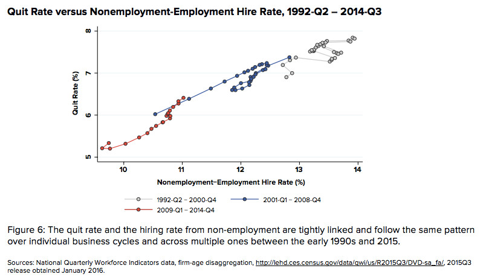

We—Marshall Steinbaum, who has recently joined the Roosevelt Institute as a visiting fellow, and Mike Konczal—have a new working paper out titled Declining Entrepreneurship, Labor Mobility, and Business Dynamism: A Demand-side Approach. We hope you check it out! We think it adds some important evidence on an unfolding debate. Here is a great write-up by Anna Louie Sussman in the Wall Street Journal this morning.
This paper provides an alternative explanation for the recent trends of declining entrepreneurship, falling labor mobility, and rising concentration of employment in old firms and large firms. Our explanation focuses on weakening demand, especially during the slow recovery from the last two recessions. That demand slowdown should, in turn, be investigated further, keeping in mind both secular stagnation and how power is shifting in favor of the owners and managers of incumbent firms alongside rising profits and inter-firm inequality. The key findings in this report are:
Wages Are Falling the Most Where Dynamism Has Fallen the Most.
If labor mobility or “dynamism” were declining due to excessive regulation and the increasing cost of job-switching or starting a new firm, then standard economic theory predicts wages and earnings would increase. But the data show that earnings have declined most where the declines in dynamism and mobility have been worst. This is true across metropolitan areas and industries as well as across new hires and all workers; in the chart below, each dot refers to a metropolitan area.
To step back and interpret what’s going on through the lens of an economic model of supply and demand, the supply-side story implies that the supply curve for labor has shifted left, at least in the increasingly regulated sectors and occupations. Supply shifts in the labor market would be expected to manifest as wages and employment moving in opposite directions. In other words, if the supply-side were driving these changes, we would expect to see wages go up and employment decline due to the scarcity of labor. Instead what we find is wages and employment moving together, which supports a demand-side story. (For those who want the more formal bells and whistles, we present a Diamond-Mortensen-Pissarides search model in an appendix, which formalizes this story.)
Regardless of what you make of the merits of policy debates over occupational licensing, housing restrictions, and regulation, these items are not the driver of the aggregate decline in labor market fluidity. Our alternative analysis suggests future research should investigate potential policy-related causes of those trends in demand and market structure—such as declining effective marginal tax rates on high earners and a permissive environment for inter-firm mergers—that deemphasize full employment and market competition and enable secular stagnation.
We hope you check out the paper!